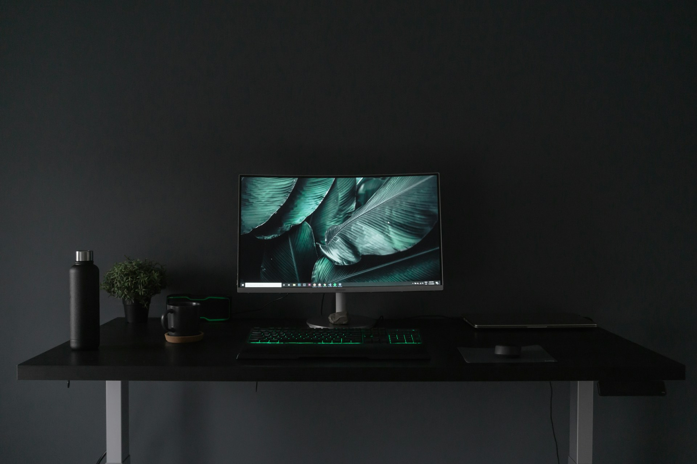

Best Work-From-Home Setup: Amazon Gear Guide (2026)

Affiliate Disclosure: This article contains affiliate links. We may earn a commission when you purchase through our links.
Creating an efficient work-from-home setup is essential for productivity and comfort. This comprehensive 2026 guide compares the best remote work equipment available on Amazon, from premium OLED monitors to budget-friendly webcams. Whether you're building a new home office or upgrading your current setup, find the perfect gear for your needs and budget.
Monitors
A quality monitor is the centerpiece of any home office. Here are the top options across different use cases for your work-from-home setup in 2026:
Best Overall: LG 27GS95QE 27-Inch Ultragear OLED Gaming Monitor
The LG 27GS95QE OLED monitor delivers stunning visuals with true black DisplayHDR 400, 240Hz refresh rate, and lightning-fast 0.03ms response time. Perfect for professionals who demand premium display quality for both productivity and entertainment. Features AMD FreeSync Premium Pro and NVIDIA G-Sync compatibility for tear-free performance.
- Resolution: 2560 x 1440 (QHD)
- Panel: OLED
- Size: 27 inches
- Refresh Rate: 240Hz
- Response Time: 0.03ms
- Ports: HDMI 2.1, DisplayPort, USB-C
- Price: ~$600
Best Budget: Amazon Basics 27-Inch Monitor FHD 1080P
The Amazon Basics 27-inch monitor delivers reliable 1080p Full HD performance at an unbeatable price. Features built-in speakers, VESA compatibility for arm mounting, and convenient USB ports. Ideal for remote workers seeking a dependable secondary display or budget-conscious home office setup.
- Resolution: 1920 x 1080 (FHD)
- Panel: IPS
- Size: 27 inches
- Refresh Rate: 100Hz
- Features: Built-in speakers, VESA compatible, USB ports
- Price: ~$130
Best 4K Gaming: Samsung 27" Odyssey G7 (G70D) 4K UHD
The Samsung Odyssey G7 G70D combines 4K UHD resolution with a rapid 144Hz refresh rate and 1ms response time for smooth, immersive visuals. Smart gaming features, adjustable stand, and G-Sync/FreeSync Premium compatibility make it ideal for professionals who game after hours. Black Equalizer technology ensures visibility in dark scenes.
- Resolution: 3840 x 2160 (4K UHD)
- Panel: IPS
- Size: 27 inches
- Refresh Rate: 144Hz
- Response Time: 1ms (GtG)
- Features: Smart Gaming, Adjustable Stand, Black Equalizer
- Price: ~$500
Keyboards
A good keyboard can significantly impact your typing comfort and productivity. Here's how the top options compare for your home office setup:
Best Mechanical: Keychron K2 HE Rapid Trigger Wireless Custom Keyboard
The Keychron K2 HE features revolutionary Hall Effect Gateron magnetic switches with rapid trigger technology for lightning-fast response. QMK firmware enables full customization, while 2.4GHz wireless, Bluetooth 5.2, and wired USB-C offer flexible connectivity. Premium aluminum frame with wood accent blends durability with aesthetics. Perfect for remote workers who demand tactile feedback and programmable macros.
- Switch Type: Gateron Hall Effect Magnetic (Rapid Trigger)
- Layout: 84 keys (75%)
- Connectivity: 2.4GHz, Bluetooth 5.2, USB-C
- Backlight: RGB
- Features: QMK customization, Mac/Windows/Linux compatible
- Price: ~$120
Best Ergonomic: Microsoft Sculpt Ergonomic Desktop
The Microsoft Sculpt Ergonomic Desktop features a split keyboard design that promotes natural hand positioning, reducing strain during long work sessions. Includes a cushioned palm rest and a separate number pad. Wireless 2.4GHz connectivity keeps your desk tidy. Trusted by professionals for ergonomic computing in home office environments.
- Switch Type: Membrane
- Layout: Split ergonomic with separate number pad
- Connectivity: Wireless (2.4GHz USB dongle)
- Features: Ergonomic design, cushioned palm rest, Windows hotkeys
- Price: ~$100
Best Premium: Logitech MX Keys S Combo
The Logitech MX Keys S Combo delivers a premium wireless typing experience with the MX Keys S keyboard and MX Master 3S mouse. Smart illumination automatically adjusts backlighting based on ambient light. Easy-Switch technology lets you seamlessly toggle between three devices. Fast wireless charging and precision scroll wheel complete this professional productivity package.
- Switch Type: Scissor (MX Keys S)
- Layout: Full-size with palm rest
- Connectivity: Bluetooth, USB-C receiver
- Features: Backlit, Easy-Switch (3 devices), fast scrolling, USB-C charging
- Price: ~$200
Headsets
For video calls and focused work, a quality headset is essential for professional communication:
Best Wireless: Jabra Evolve2 85 Wireless PC Headset
The Jabra Evolve2 85 is a UC-certified premium wireless headset with industry-leading active noise cancellation for crystal-clear calls. Features a dedicated boom arm microphone, long-lasting battery, and comes with a USB-C Bluetooth adapter for seamless PC connectivity. Ideal for professionals who spend hours on video conferences in noisy home environments.
- Type: Over-ear, Wireless
- Noise Cancellation: ANC (10-mic technology)
- Battery Life: Up to 37 hours
- Microphone: Dedicated boom arm with noise cancellation
- Connectivity: Bluetooth, USB-C adapter included
- Price: ~$350
Best Budget Wireless: Sony WH-CH520 Wireless Headphones
The Sony WH-CH520 wireless headphones deliver Sony's renowned audio quality with up to 50 hours of battery life. Quick charging provides hours of playback from just minutes of charge. Lightweight on-ear design with built-in microphone for calls. Perfect budget-friendly choice for remote workers who need all-day wireless audio.
- Type: On-ear, Wireless
- Battery Life: Up to 50 hours
- Microphone: Built-in
- Connectivity: Bluetooth
- Features: Quick charging, lightweight design
- Price: ~$80
Best USB Headset: Logitech H391 Wired Headset
The Logitech H391 wired headset offers plug-and-play simplicity with USB-C connectivity for instant professional audio. Features a noise-canceling microphone that filters background noise for clear voice transmission. Comfortable stereo headphones with in-line controls for volume and mute. Compatible with Chromebook and all major video conferencing platforms.
- Type: On-ear, Wired USB
- Noise Cancellation: Passive (noise-canceling mic)
- Connectivity: USB-C
- Features: In-line controls, stereo audio
- Compatibility: Works with Chromebook, Zoom, Teams, Google Meet
- Price: ~$35
Webcams
A sharp webcam is crucial for professional video calls and remote work communication:
Best Overall: Logitech C920x HD Pro PC Webcam
The Logitech C920x HD Pro webcam delivers Full HD 1080p video at 30fps with clear audio and automatic HD light correction. Auto-focus ensures you stay sharp during calls. Certified for Microsoft Teams, Google Meet, and Zoom. Compatible with Nintendo Switch 2's new GameChat Mode. The go-to choice for professionals seeking reliable video quality without breaking the budget.
- Resolution: 1080p Full HD @ 30fps
- Field of View: 78 degrees
- Autofocus: Yes
- Microphone: Stereo with noise reduction
- Features: HD light correction, universal clip
- Price: ~$70
Best 4K: Logitech Brio 4K Webcam
The Logitech Brio 4K webcam delivers ultra-premium video quality with 4K resolution, HDR support, and HD auto light correction for perfect exposure in any lighting. Features noise-canceling microphones, adjustable wide field of view, and Windows Hello facial recognition support. The ultimate webcam for professionals who demand the highest video quality on calls.
- Resolution: 4K @ 30fps, 1080p @ 60fps
- Field of View: 65/78/90 degrees (adjustable)
- Autofocus: Yes
- Features: HDR, Windows Hello, noise-canceling mic
- Price: ~$200
Best Budget: Anker PowerConf C200 2K Webcam
The Anker PowerConf C200 webcam delivers crisp 2K QHD video at an affordable price point. Features AI-powered noise-canceling microphones, adjustable field of view up to 95 degrees, and automatic low-light correction for professional-looking calls. Built-in privacy cover protects your security when not in use. Excellent value for budget-conscious remote workers.
- Resolution: 2K QHD @ 30fps
- Field of View: 95 degrees (adjustable)
- Autofocus: Yes
- Microphone: Stereo with AI noise cancellation
- Privacy: Built-in privacy cover
- Price: ~$55
Desk Accessories
Monitor Stands
A good monitor stand improves ergonomics and frees up desk space:
- Best Adjustable: Ergotron LX Dual Side-by-Side Arm (~ $300)
- Best Budget Stand: Amazon Basics Monitor Riser (~ $25)
- Best Dual Stand: HUANUO Dual Monitor Stand (~ $80)
Desk Organizers
- Best Premium: Samsonite Executive Desk Organizer (~ $40)
- Best Value: Roomi Minimalist Desk Organizer (~ $15)
Complete Setup Recommendations
Here are our recommended configurations for different budgets and use cases:
Budget Setup (Under $500)
- Monitor: Amazon Basics 27" (~ $130)
- Keyboard: Keychron K2 HE (~ $120)
- Mouse: Logitech B100 (~ $15)
- Webcam: Anker PowerConf C200 (~ $55)
- Headset: Logitech H391 (~ $35)
- Monitor Stand: Amazon Basics Riser (~ $25)
- Total: ~ $380
Mid-Range Setup ($500-$1,500)
- Monitor: Samsung Odyssey G7 4K (~ $500)
- Keyboard: Keychron K2 HE (~ $120)
- Mouse: Logitech MX Master 3S (~ $100)
- Webcam: Logitech C920x (~ $70)
- Headset: Sony WH-CH520 (~ $80)
- Monitor Arm: HUANUO Dual Arm (~ $80)
- Total: ~ $950
Premium Setup ($1,500+)
- Monitor: LG 27GS95QE OLED (~ $600)
- Keyboard: Logitech MX Keys S Combo (~ $200)
- Mouse: Logitech MX Master 3S (~ $100)
- Webcam: Logitech Brio 4K (~ $200)
- Headset: Jabra Evolve2 85 (~ $350)
- Monitor Arm: Ergotron LX (~ $300)
- Desk: Uplift V2 Standing Desk (~ $600)
- Total: ~ $2,350
Ergonomics Checklist
Regardless of your budget, ensure your setup follows these ergonomic guidelines:
- Monitor height: Top of screen at eye level, arm's length away
- Keyboard height: Elbows at 90 degrees, wrists straight
- Chair height: Feet flat on floor, thighs parallel to ground
- Lighting: No screen glare, consistent ambient lighting
- Breaks: Take a 5-minute break every hour
Conclusion
Building an effective work-from-home setup doesn't have to break the bank. The key is prioritizing the items that have the biggest impact on your daily comfort and productivity:
Start with: A quality monitor and comfortable keyboard - these are the tools you'll use every day.
Next, invest in: A good headset and webcam if you take many video calls.
Finally, optimize: Add monitor arms, desk accessories, and ergonomic upgrades as your budget allows.
Remember that the best setup is one that fits your specific needs and budget. Start with the essentials and gradually upgrade as needed. Your health and comfort are worth the investment.